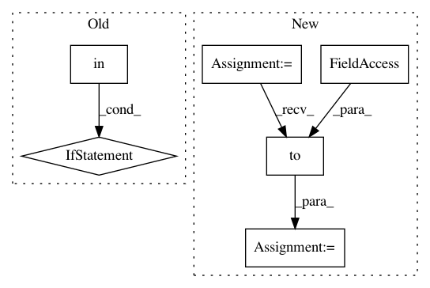

f11eabc65072d34b431cc85419c27c0b0d00950c,examples/autoencoder.py,,,#,66
Before Change
channels = 16
dev = torch.device("cuda" if torch.cuda.is_available() else "cpu")
if args.model in ["LinearGAE","LinearVGAE"]:
model = kwargs[args.model](LinearEncoder(dataset.num_features, channels)).to(dev)
else:
model = kwargs[args.model](GCNEncoder(dataset.num_features, channels)).to(dev)
data.train_mask = data.val_mask = data.test_mask = data.y = None
data = train_test_split_edges(data)
x, train_pos_edge_index = data.x.to(dev), data.train_pos_edge_index.to(dev)
optimizer = torch.optim.Adam(model.parameters(), lr=0.01)
After Change
if args.linear:
model = VGAE(VariationalLinearEncoder(num_features, out_channels))
else:
model = VGAE(VariationalGCNEncoder(num_features, out_channels))
device = torch.device("cuda" if torch.cuda.is_available() else "cpu")
model = model.to(device)
x = data.x.to(device)
train_pos_edge_index = data.train_pos_edge_index.to(device)
optimizer = torch.optim.Adam(model.parameters(), lr=0.01)
In pattern: SUPERPATTERN
Frequency: 3
Non-data size: 6
Instances
Project Name: rusty1s/pytorch_geometric
Commit Name: f11eabc65072d34b431cc85419c27c0b0d00950c
Time: 2020-10-09
Author: matthias.fey@tu-dortmund.de
File Name: examples/autoencoder.py
Class Name:
Method Name:
Project Name: ray-project/ray
Commit Name: 428516056abe41f135133e732a8d44af6ce9a234
Time: 2020-04-15
Author: sven@anyscale.io
File Name: rllib/utils/exploration/random.py
Class Name: Random
Method Name: get_torch_exploration_action
Project Name: rusty1s/pytorch_geometric
Commit Name: 5510a7709e957615fb55397698f8e1c79cd5481b
Time: 2020-07-01
Author: matthias.fey@tu-dortmund.de
File Name: torch_geometric/io/ply.py
Class Name:
Method Name: read_ply